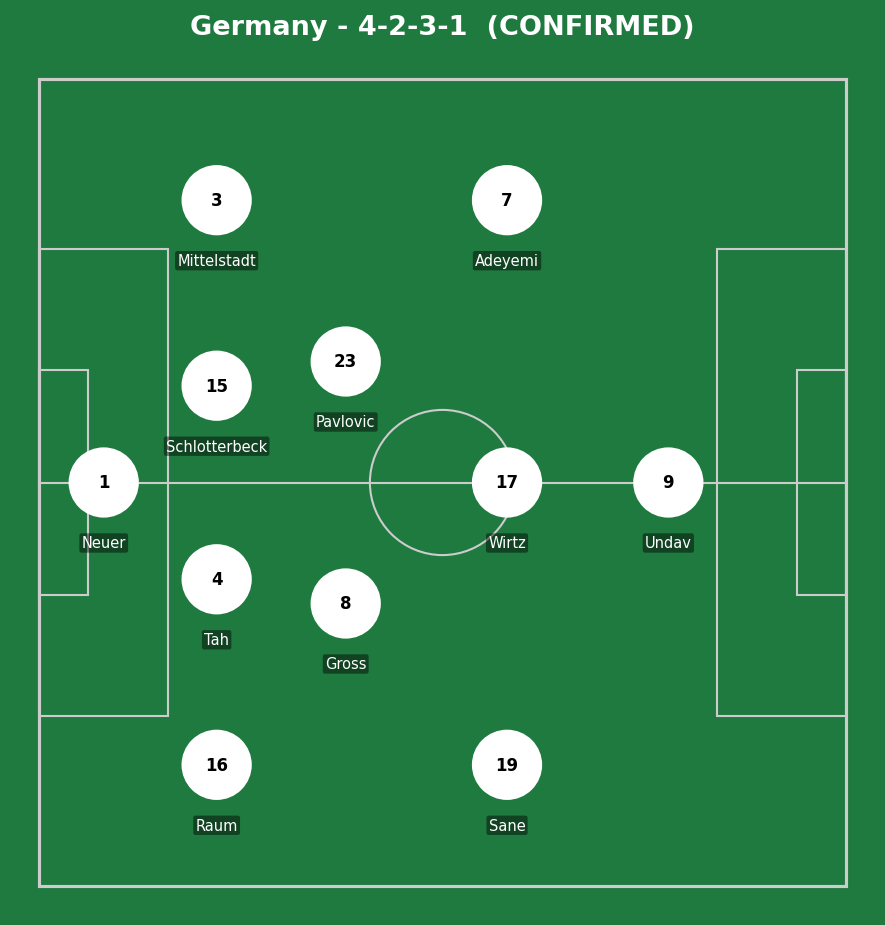
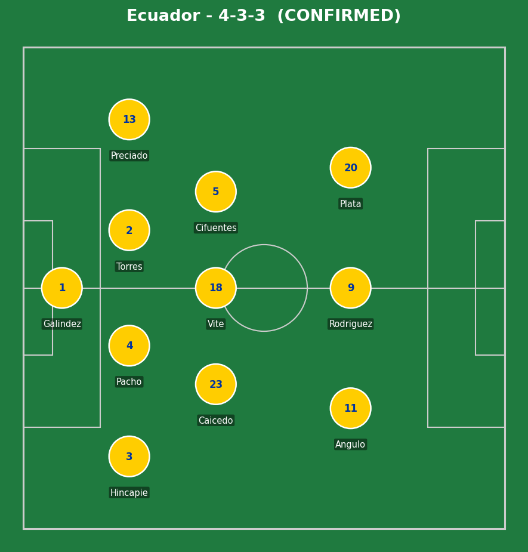
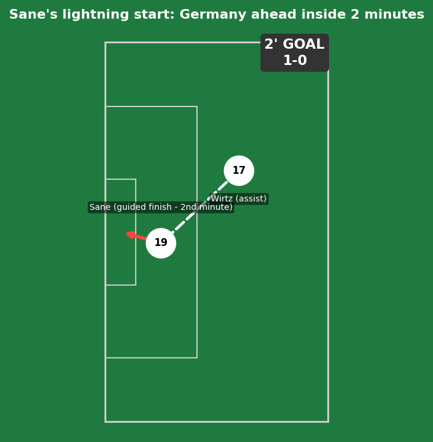
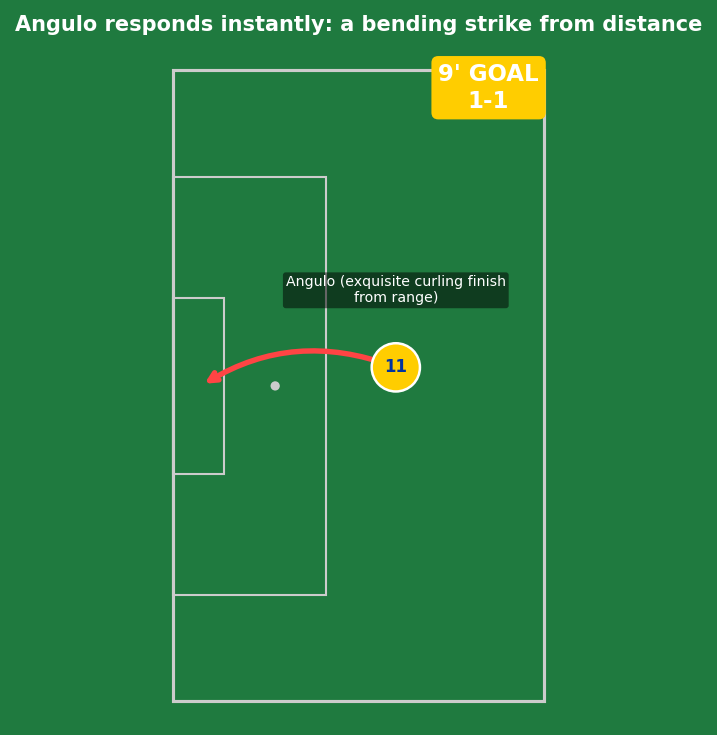
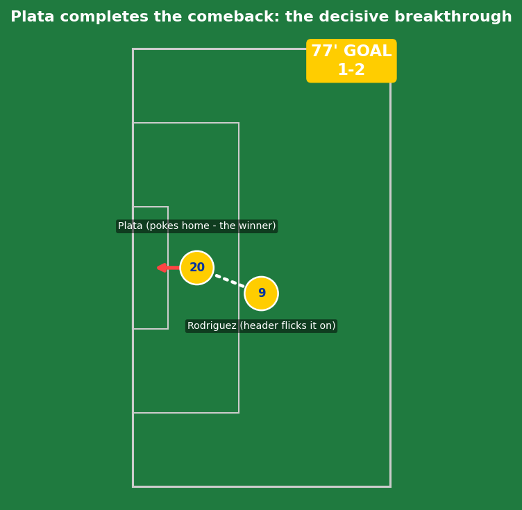
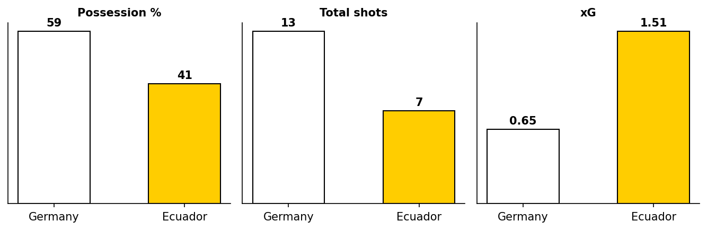
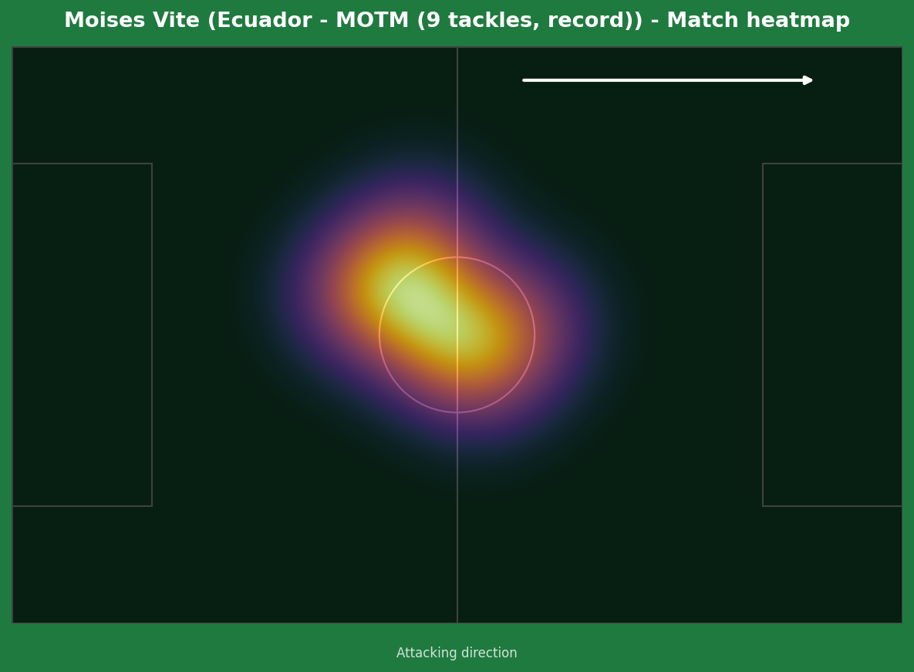
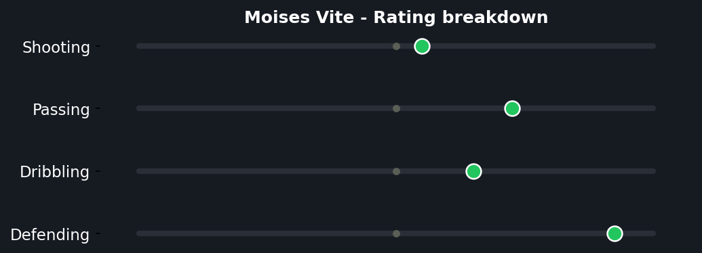

Germany made the worst possible start to a game that meant little to their own standing (already through as group winners regardless) but everything to Ecuador's survival. Leroy Sane put the Germans ahead inside two minutes, only for Nilson Angulo to level seven minutes later with a genuinely exquisite finish from range. The decisive moment came in the 77th minute, when Gonzalo Plata poked home after a Rodriguez header flicked the ball into his path, sending Ecuador through to the Round of 32 for the first time since 2006.


Germany (4-2-3-1): Neuer; Raum, Tah, Schlotterbeck, Mittelstadt; Gross, Pavlovic; Sane, Wirtz, Adeyemi; Undav. Ecuador (4-3-3): Galindez; Hincapie, Pacho, Torres, Preciado; Caicedo, Vite, Cifuentes; Angulo, Rodriguez, Plata.
Germany, already secured as group winners regardless of this result, fielded a side that lacked the urgency Ecuador brought from the opening whistle - their early goal almost papered over a performance that was otherwise short on the sharpness shown earlier in the tournament. Vite's astonishing nine tackles - the most by any Ecuadorian player on record at a World Cup since 1966, and joint-most by anyone at this tournament - was the clearest sign of the work-rate gap that decided the contest.
Ecuador's approach was built on exactly that intensity, winning the ball back high and often, and trusting their front three to make the most of the resulting transitions. Despite recording fewer shots (seven) than at any other point this tournament, the quality of those chances (1.51 xG to Germany's 0.65) reflected a side that created the better, clearer opportunities even while seeing less of the ball overall.
The key tactical moment: Ecuador's response to falling behind inside two minutes. Rather than panic, they leveled within seven minutes and never let the early setback define the rest of the match - a sign of real composure from a side under genuine must-win pressure.

A clean, well-worked early goal - Florian Wirtz's assist was precise, and Sane guided the finish home with composure inside the opening two minutes. No Ecuador error to point to; just Germany taking an early, low-stakes match seriously from the first whistle.

A genuinely exquisite finish - bending the ball past Neuer from range with real technique, the kind of strike that requires both a clean strike and the composure to attempt it just minutes after going behind. Pure individual quality from Angulo, instantly setting the tone for an Ecuador response rather than a collapse.

A scrappy but decisive breakthrough - Rodriguez's header didn't go where intended, but the flick fell perfectly into Plata's path, and he reacted quickest to poke it past Neuer. Not the prettiest goal of the tournament, but exactly the kind of opportunistic finish a side chasing a vital result needs to find.

Despite trailing on possession (41%) and total shots (7 to 13), Ecuador actually generated the higher quality chances - 1.51 xG to Germany's 0.65 - reflecting a result built on efficiency rather than fortune.


Not a goalscorer, not an assist provider - but genuinely the most important player on the pitch by a different measure entirely. Nine tackles in a single World Cup match is the most by any Ecuadorian player on record dating back to 1966, and matches the most by any player at this entire tournament. This is exactly the kind of defensive midfield performance that creates the platform for a result like this - unglamorous, statistically extreme, and directly responsible for limiting Germany's ability to build sustained pressure after the opening exchanges.
Illustrative reconstruction based on known event locations, not raw GPS tracking data.
Sane - 6.5 (early goal, faded after)
Wirtz - 6.0 (assist, quiet otherwise)
Undav - 5.0 (missed a clear chance late)
Neuer - 5.5 (beaten by quality both times)
Vite - 8.0 ⭐ MOTM (9 tackles, record)
Angulo - 7.5 (exquisite equalizer)
Plata - 7.5 (decisive winner)
Galindez - 6.5 (solid, limited to test)
Germany finish Group E top despite the defeat, courtesy of a superior head-to-head record over Ivory Coast. Ecuador advance in third and could face England in the Round of 32 depending on other results.
💬 Reactions & Comments